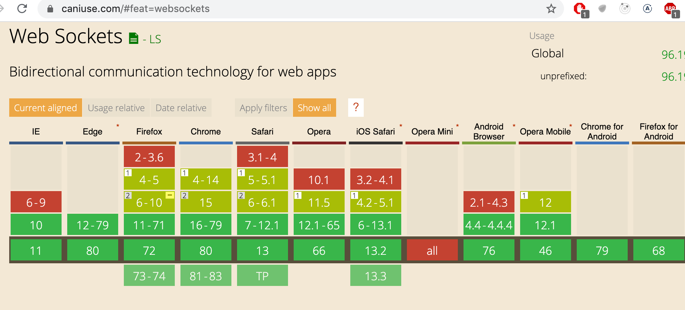
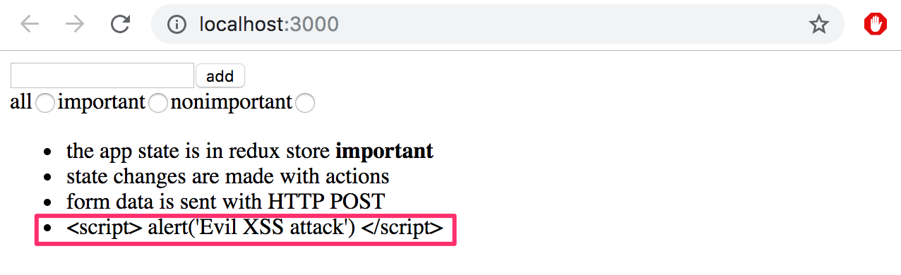
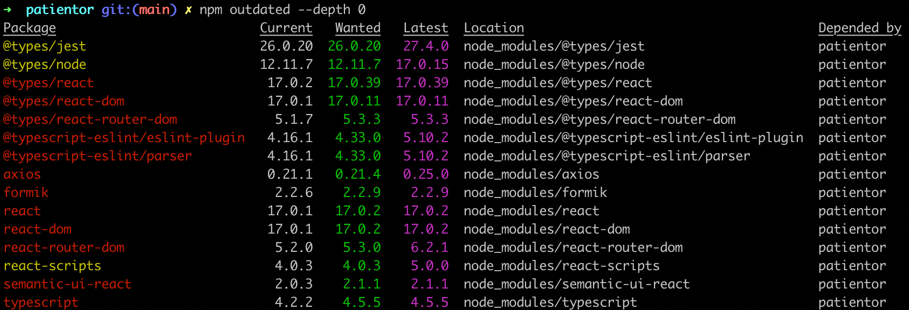
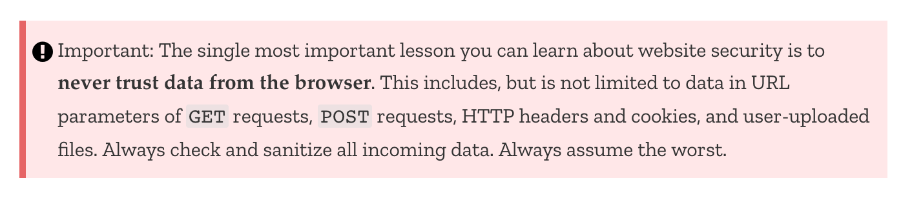
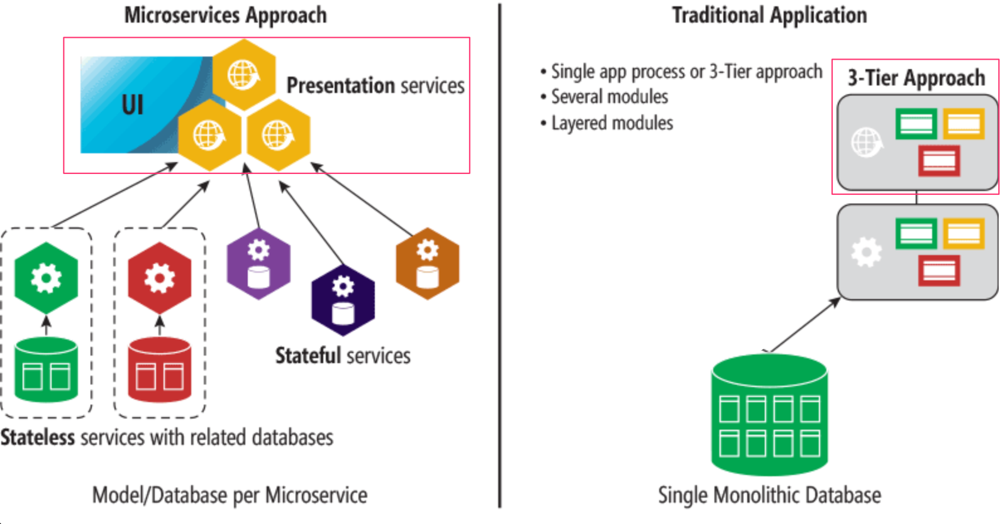

Class Components
在这个课程中，我们只使用了被定义为Javascript函数的React组件。如果没有React 16.8版本中的hook功能，这是不可能的。以前，当定义一个使用状态的组件时，我们必须使用Javascript的Class语法来定义它。
至少在某种程度上熟悉类组件是有好处的，因为世界上有很多旧的React代码，这些代码可能永远不会被完全用更新的语法重写。
让我们通过制作另一个非常熟悉的名言警句应用来了解类组件的主要功能。我们使用json-server将名言警句存储在db.json文件中。该文件的内容是从这里摘取的。
类组件的初始版本看起来是这样的
import React from 'react'
class App extends React.Component {
constructor(props) {
super(props)
}
render() {
return (
<div>
<h1>anecdote of the day</h1>
</div>
)
}
}
export default App
该组件现在有一个构造函数，其中暂时没有发生任何事情，并包含方法渲染。正如人们所猜测的那样，render定义了如何和什么被渲染到屏幕上。
让我们为名言警句列表和当前可见的名言警句定义一个状态。与使用useState钩子时不同的是，类组件只包含一个状态。因此，如果状态是由多个 "部分 "组成的，它们应该被存储为状态的属性。状态在构造函数中被初始化。
class App extends React.Component {
constructor(props) {
super(props)
// highlight-start
this.state = {
anecdotes: [],
current: 0
}
// highlight-end
}
render() {
if (this.state.anecdotes.length === 0) { // highlight-line
return <div>no anecdotes...</div>
}
return (
<div>
<h1>anecdote of the day</h1>
<div>
{this.state.anecdotes[this.state.current].content} // highlight-line
</div>
<button>next</button>
</div>
)
}
}
组件的状态在实例变量_this.state_中。状态是一个有两个属性的对象。this.state.anecdotes是名言警句的列表，this.state.current是当前显示的名言警句的索引。
在功能组件中，从服务器获取数据的正确位置是在效果钩子中，它在组件渲染时被执行，或者在必要时不那么频繁，例如，只在第一次渲染时被执行。
类组件的生命周期方法提供相应的功能。触发从服务器获取数据的正确位置是在生命周期方法componentDidMount中，该方法在一个组件第一次渲染后执行一次。
class App extends React.Component {
constructor(props) {
super(props)
this.state = {
anecdotes: [],
current: 0
}
}
// highlight-start
componentDidMount = () => {
axios.get('http://localhost:3001/anecdotes').then(response => {
this.setState({ anecdotes: response.data })
})
}
// highlight-end
// ...
}
HTTP请求的回调函数使用方法setState更新组件的状态。该方法只触及作为参数传递给该方法的对象中定义的键。键current的值保持不变。
调用setState方法总是会触发类组件的重新渲染，也就是调用_render_方法。
我们将以改变所显示的名言警句的能力来结束这个组件。下面是整个组件的代码，其中突出强调了添加的内容。
class App extends React.Component {
constructor(props) {
super(props)
this.state = {
anecdotes: [],
current: 0
}
}
componentDidMount = () => {
axios.get('http://localhost:3001/anecdotes').then(response => {
this.setState({ anecdotes: response.data })
})
}
// highlight-start
handleClick = () => {
const current = Math.floor(
Math.random() * this.state.anecdotes.length
)
this.setState({ current })
}
// highlight-end
render() {
if (this.state.anecdotes.length === 0 ) {
return <div>no anecdotes...</div>
}
return (
<div>
<h1>anecdote of the day</h1>
<div>{this.state.anecdotes[this.state.current].content}</div>
<button onClick={this.handleClick}>next</button> // highlight-line
</div>
)
}
}
为便于比较，这里是同样的应用，作为一个功能组件。
const App = () => {
const [anecdotes, setAnecdotes] = useState([])
const [current, setCurrent] = useState(0)
useEffect(() =>{
axios.get('http://localhost:3001/anecdotes').then(response => {
setAnecdotes(response.data)
})
},[])
const handleClick = () => {
setCurrent(Math.round(Math.random() * (anecdotes.length - 1)))
}
if (anecdotes.length === 0) {
return <div>no anecdotes...</div>
}
return (
<div>
<h1>anecdote of the day</h1>
<div>{anecdotes[current].content}</div>
<button onClick={handleClick}>next</button>
</div>
)
}
在我们的例子中，差异很小。功能性组件和类组件之间最大的区别主要是，类组件的状态是一个单一的对象，而且状态是通过_setState_方法来更新的，而在功能性组件中，状态可以由多个不同的变量组成，所有的变量都有自己的更新函数。
在一些更高级的用例中，与类组件的生命周期方法相比，效果钩提供了一个相当好的机制来控制副作用。
使用功能组件的一个明显的好处是不必处理Javascript类的自我引用_this_。
在我和其他许多人看来，类组件基本上没有提供比用钩子增强的功能组件更多的好处，除了所谓的错误边界机制，目前（2021年2月15日）还没有被功能组件使用。
在编写新的代码时，如果项目使用的是版本号为16.8或更高的React，就没有合理的理由使用类组件。另一方面，目前没有必要将所有旧的React代码重写为功能组件。
Organization of code in React application
在大多数应用中，我们遵循的原则是：组件放在components目录中，reducers放在reducers目录中，而负责与服务器通信的代码放在services目录中。这种组织方式适合小型应用，但随着组件数量的增加，需要更好的解决方案。没有一种正确的方式来组织项目。这篇文章The 100% correct way to structure a React app (or why there's no such thing)对这个问题提供了一些看法。
Frontend and backend in the same repository
在课程中，我们将前端和后端创建为不同的存储库。这是一个非常典型的方法。然而，我们通过复制将捆绑的前端代码复制到后端仓库来进行部署。一个可能更好的方法是将前端代码单独部署。特别是对于使用Create React App创建的应用，由于包含了buildpack，它是非常直接的。
有时，可能会出现整个应用要放到一个仓库中的情况。在这种情况下，常见的做法是将package.json和webpack.config.js放在根目录下，同时将前端和后端代码放在各自的目录下，例如client和server。
这个仓库为 "单一仓库代码 "的组织提供了一个可能的起点。
Changes on the server
如果服务器上的状态有变化，例如，当其他用户向博客列表服务添加新的博客时，我们在本课程中实现的React前端将不会注意到这些变化，直到页面重新加载。当前端触发了后端的一个耗时的计算时，也会出现类似的情况。我们如何将计算的结果反映到前端？
一种方法是在前端执行轮询，也就是重复请求后端API，比如使用setInterval命令。
更复杂的方法是使用WebSockets，它允许在浏览器和服务器之间建立一个双向的通信通道。在这种情况下，浏览器不需要轮询后端，而只需要为服务器使用WebSocket发送更新状态数据的情况定义回调函数。
WebSockets是由浏览器提供的一个API，它还没有被所有的浏览器完全支持。

与其直接使用WebSocket API，不如使用Socket.io库，它提供了各种回落选项，以防浏览器不完全支持WebSocket。
在第8章节中，我们的主题是GraphQL，它提供了一个很好的机制，当后端数据有变化时，可以通知客户端。
Virtual DOM
在讨论React的时候，经常会出现虚拟DOM的概念。它到底是什么？正如在第0章节中提到的，浏览器提供了一个DOM API，通过它，在浏览器中运行的JavaScript可以修改定义页面外观的元素。
当软件开发者使用React时，他们很少或从不直接操作DOM。定义React组件的函数返回一组React元素。虽然其中一些元素如下所示：普通的HTML元素
const element = <h1>Hello, world</h1>
它们的核心也只是基于JavaScript的React元素。
定义应用组件外观的React元素构成了虚拟DOM，它在运行时被存储在系统内存中。
在ReactDOM库的帮助下，由组件定义的虚拟DOM被渲染成一个真实的DOM，可以由浏览器使用DOM API显示。
ReactDOM.createRoot(document.getElementById('root')).render(
<App />
)
当应用的状态改变时，一个新的虚拟DOM会被组件定义。React在内存中拥有先前版本的虚拟DOM，而不是使用DOM API直接渲染新的虚拟DOM，React计算出更新DOM的最佳方式（删除、添加或修改DOM中的元素），从而使DOM反映出新的虚拟DOM。
On the role of React in applications
在材料中，我们可能没有充分强调React主要是一个管理应用创建视图的库。如果我们看一下传统的Model View Controller模式，那么React的领域应该是View。React的应用范围比Angular更窄，后者是一个包罗万象的前端MVC框架。因此，React不被称为一个框架，而是一个库。
在小型应用中，应用所处理的数据被存储在React组件的状态中，所以在这种情况下，组件的状态可以被认为是MVC架构的模型。
然而，在谈论React应用时，通常不会提到MVC架构。此外，如果我们使用Redux，那么应用遵循Flux架构，React的作用甚至更侧重于创建视图。应用的业务逻辑是使用Redux的状态和动作创建器来处理的。如果我们使用第六章节中熟悉的redux thunk，那么业务逻辑几乎可以与React代码完全分离。
因为React和Flux都是在Facebook创建的，可以说只把React作为一个UI库来使用是预期的使用情况。遵循Flux架构会给应用增加一些开销，如果我们谈论的是一个小的应用或原型，那么 "错误 "地使用React可能是一个好主意，因为过度工程很少会产生一个最佳结果。
正如我在第六章节的结尾提到的，React的Context api为集中式状态管理提供了一种替代解决方案，而不需要redux之类的第三方库。你可以阅读更多关于这个这里和这里。
React/node-application security
到目前为止，在课程中，我们还没有过多地涉及到信息安全。我们现在也没有太多的时间，但幸运的是，系里有MOOC课程Securing Software来讨论这个重要话题。
不过，我们会看一下这个课程的一些具体内容。
开放网络应用安全项目，又称OWASP，每年发布一份网络应用中最常见的安全风险清单。最新的列表可以在这里找到。同样的风险可以从一年到另一年中找到。
在列表的顶部，我们发现注入，这意味着例如在应用中使用表格发送的文本被解释为与软件开发人员的意图完全不同。最有名的注入类型可能是SQL注入。
例如，想象一下，在一个有漏洞的应用中执行以下SQL查询。
let query = "SELECT * FROM Users WHERE name = '" + userName + "';"
现在我们假设一个恶意的用户Arto Hellas将他们的名字定义为
Arto Hell-as'; DROP TABLE Users; --
这样名字就包含一个单引号''，这是一个SQL字符串的开始和结束字符。这样做的结果是，两个SQL操作将被执行，其中第二个操作将破坏数据库表Users。
SELECT * FROM Users WHERE name = 'Arto Hell-as'; DROP TABLE Users; --'
使用参数化查询可以防止SQL注入。使用它们，用户的输入不会与SQL查询混合，而是数据库本身在查询的占位符处插入输入值（通常是?）。
execute("SELECT * FROM Users WHERE name = ?", [userName])
注入攻击在NoSQL数据库中也是可行的。然而，mongoose通过sanitizing查询来防止它们。关于这个主题的更多信息可以找到，例如这里。
Cross-site scripting (XSS) is an attack where it is possible to inject malicious JavaScript code into a legitimate web application. The malicious code would then be executed in the browser of the victim. If we try to inject the following into e.g. the notes application:
<script>
alert('Evil XSS attack')
</script>
代码不被执行，只是在页面上渲染为"文本"。

因为React负责对变量中的数据进行消毒。一些版本的React已经容易受到XSS攻击。当然，这些安全漏洞已经被修补了，但不能保证不会有更多的漏洞。
在使用库的时候，人们需要保持警惕；如果这些库有安全更新，建议在自己的应用中更新这些库。Express的安全更新可以在库的文档找到，Node的安全更新可以在这个博客找到。
你可以使用以下命令检查你的依赖关系的最新情况
npm outdated --depth 0
他的课程的第9章节使用的一年前的项目已经有很多过时的依赖关系。

可以通过更新文件package.json来使依赖关系更新。最好的方法是使用一个叫做_npm-check-updates_的工具来做到这一点。它可以通过运行以下命令全局安装
npm install -g npm-check-updates
使用这个工具，将以如下方式检查依赖关系的最新情况。
$ npm-check-updates
Checking ...\ultimate-hooks\package.json
[====================] 9/9 100%
@testing-library/react ^13.0.0 → ^13.1.1
@testing-library/user-event ^14.0.4 → ^14.1.1
react-scripts 5.0.0 → 5.0.1
Run ncu -u to upgrade package.json
文件package.json通过运行命令_ncu -u_被更新。
$ ncu -u
Upgrading ...\ultimate-hooks\package.json
[====================] 9/9 100%
@testing-library/react ^13.0.0 → ^13.1.1
@testing-library/user-event ^14.0.4 → ^14.1.1
react-scripts 5.0.0 → 5.0.1
Run npm install to install new versions.
然后是通过运行命令_npm install_来更新依赖项。然而，旧版本的依赖关系不一定有安全风险。
npm audit 命令可以用来检查依赖关系的安全性。它将你的应用中的依赖关系的版本号与一个集中的错误数据库中包含已知安全威胁的依赖关系的版本号列表进行比较。
在同一个项目上运行_npm audit_，会打印出一长串的投诉和建议修复的清单。
下面是报告的一部分。
$ patientor npm audit
... many lines removed ...
url-parse <1.5.2
Severity: moderate
Open redirect in url-parse - https://github.com/advisories/GHSA-hh27-ffr2-f2jc
fix available via `npm audit fix`
node_modules/url-parse
ws 6.0.0 - 6.2.1 || 7.0.0 - 7.4.5
Severity: moderate
ReDoS in Sec-Websocket-Protocol header - https://github.com/advisories/GHSA-6fc8-4gx4-v693
ReDoS in Sec-Websocket-Protocol header - https://github.com/advisories/GHSA-6fc8-4gx4-v693
fix available via `npm audit fix`
node_modules/webpack-dev-server/node_modules/ws
node_modules/ws
120 vulnerabilities (102 moderate, 16 high, 2 critical)
To address issues that do not require attention, run:
npm audit fix
To address all issues (including breaking changes), run:
npm audit fix --force
仅仅一年之后，代码就充满了小的安全威胁。幸运的是，只有2个关键威胁。 让我们按照报告的建议运行_npm audit fix_。
$ npm audit fix
+ mongoose@5.9.1
added 19 packages from 8 contributors, removed 8 packages and updated 15 packages in 7.325s
fixed 354 of 416 vulnerabilities in 20047 scanned packages
1 package update for 62 vulns involved breaking changes
(use `npm audit fix --force` to install breaking changes; or refer to `npm audit` for steps to fix these manually)
62个威胁仍然存在，因为在默认情况下，_audit fix_不更新依赖关系，如果它们的主要版本号已经增加。 更新这些依赖关系可能导致整个应用崩溃。
关键错误的来源是库immer
immer <9.0.6
Severity: critical
Prototype Pollution in immer - https://github.com/advisories/GHSA-33f9-j839-rf8h
fix available via `npm audit fix --force`
Will install react-scripts@5.0.0, which is a breaking change
运行_npm audit fix --force_会升级库的版本，但也会升级库_react-scripts_，这有可能会破坏开发环境。所以我们会把库的升级留到以后...
OWASP的列表中提到的威胁之一是破坏性认证和相关的破坏性访问控制。如果应用是在流量加密的HTTPS协议上使用，我们一直使用的基于令牌的认证是相当强大的。在实现访问控制时，我们应该记住不仅要在浏览器中检查用户的身份，还要在服务器上检查。糟糕的安全问题是仅仅通过在浏览器的代码中隐藏执行选项来阻止一些行动的进行。
在Mozilla's MDN上，有一个非常好的网站安全指南，它提出了这个非常重要的话题。

Express的文档包括一个关于安全的章节：生产最佳实践：安全，值得一读。我们还建议在后端添加一个叫做Helmet的库。它包括一组中间件，可以消除Express应用中的一些安全漏洞。
使用ESlint security-plugin也是值得做的。
Current trends
最后，让我们来看看一些未来的技术（或者，实际上，今天已经有了），以及网络开发的方向。
Typed versions of JavaScript
有时，JavaScript变量的动态类型会产生恼人的错误。在第五章节，我们简要地谈到了PropTypes：一种能够对传递给React组件的props实施类型检查的机制。
最近，人们对静态类型检查的兴趣有了明显的提升。目前，最流行的Javascript类型化版本是Typescript，它由微软开发。Typescript在第9章节中有所介绍。
Server-side rendering, isomorphic applications and universal code
浏览器不是唯一可以渲染使用React定义的组件的领域。渲染也可以在服务器上完成。这种方法正被越来越多地使用，例如，当第一次访问应用时，服务器会提供一个用React制作的预渲染的页面。从这里开始，应用的操作照常进行，也就是说，浏览器执行React，它操纵浏览器显示的DOM。在服务器上进行的渲染有一个名字。服务器端渲染。
服务器端渲染的一个动机是搜索引擎优化（SEO）。传统上，搜索引擎在识别JavaScript渲染的内容方面一直很糟糕。然而，潮流可能正在转向，例如，看看this和this。
当然，服务器端渲染并不是React甚至JavaScript特有的东西。在整个堆栈中使用相同的编程语言在理论上简化了概念的执行，因为相同的代码可以在前端和后端运行。
伴随着服务器端渲染，人们一直在谈论所谓的同构应用和通用代码，尽管对它们的定义存在一些争论。根据一些定义，一个同构的网络应用是一个在前端和后端都进行渲染的应用。另一方面，通用代码是可以在大多数环境中执行的代码，指的是在前端和后端都可以执行。
React和Node提供了一个理想的选择，可以将一个同构的应用实现为通用代码。
直接使用React编写通用代码，目前还是相当麻烦的。最近，一个名为Next.js的库，在React的基础上实现，获得了很多关注，是制作通用应用的一个不错的选择。
Progressive web apps
最近，人们开始使用谷歌推出的渐进式网络应用(PWA)这一术语。
简而言之，我们谈论的是网络应用在每个平台上尽可能地工作，利用这些平台的最佳部分。移动设备的小屏幕不能妨碍应用的可用性。PWA还应该在离线模式或网络连接缓慢的情况下完美地工作。在移动设备上，它们必须像其他应用一样可以安装。PWA中的所有网络流量都应该是加密的。
使用Create React App创建的应用默认为渐进式。如果应用使用来自服务器的数据，使其渐进式需要工作。离线功能通常是在服务工作者的帮助下实现的。
Microservice architecture
在这一课程中，我们只触及了服务器端的表面。在我们的应用中，我们有一个monolithic后端，意味着一个应用构成一个整体，并在一个服务器上运行，只为几个API端点服务。
随着应用的增长，单体后端方法在性能和可维护性方面开始变得有问题。
微服务架构 (microservices)是一种将应用的后端由许多独立的服务组成的方式，这些服务通过网络相互通信。一个单独的微服务的目的是照顾到一个特定的逻辑功能整体。在一个纯粹的微服务架构中，这些服务不使用共享数据库。
例如，博客列表应用可以由两个服务组成：一个处理用户，另一个照顾博客。用户服务的职责是用户注册和用户认证，而博客服务将负责与博客相关的操作。
下面的图片直观地显示了基于微服务架构的应用的结构与基于更传统的单体结构的应用的区别。

前端的作用（图片中用方块围起来）在这两种模式中没有太大的区别。在微服务和前端之间通常有一个所谓的API网关，它提供了一个更传统的 "一切都在同一个服务器上 "的API的假象。Netflix，除其他外，采用了这种类型的方法。
微服务架构的出现和发展是为了满足大型互联网规模应用的需要。在微服务这个词出现之前，亚马逊就已经确定了这个趋势。关键的起点是亚马逊CEO Jeff Bezos在2002年发给所有员工的一封电子邮件。
所有的团队今后都将通过服务接口暴露他们的数据和功能。
团队之间必须通过这些接口进行交流。
没有其他形式的进程间通信是允许的：没有直接链接，没有直接读取另一个团队的数据存储，没有共享内存模型，没有任何后门。唯一允许的通信是通过网络的服务接口调用。
你使用什么技术并不重要。
所有的服务接口，无一例外，都必须从头开始设计为可外化的。也就是说，团队必须计划和设计能够将接口暴露给外部世界的开发者。
没有例外。
任何不这样做的人都会被解雇。谢谢你；祝你有个愉快的一天!
现在，使用微服务的最大先行者之一是Netflix。
微服务的使用已经逐渐被炒作成了今天的银弹，它被作为几乎所有问题的解决方案而提出。然而，当涉及到应用微服务架构时，有一些挑战，通过最初制作一个传统的全方位的后端，走单片机优先可能是合理的。或者也许不。在这个问题上有一堆不同的意见。这两个链接都指向Martin Fowler's网站；我们可以看到，即使是智者也不能完全确定哪一种正确的方式更正确。
不幸的是，在这个课程中，我们无法深入研究这个重要的话题。即使粗略地看一下这个话题，也需要至少5周的时间。
Serverless
在2014年底亚马逊的lambda服务发布后，网络应用开发中开始出现一个新的趋势。无服务器。
关于lambda，以及现在谷歌的云功能和Azure的类似功能的主要内容是，它能够在云中执行单个功能。之前，云中最小的可执行单元是单个进程，例如，运行Node后端的运行环境。
例如，使用亚马逊的API网关，可以制作无服务器应用，其中对定义的HTTP API的请求直接从云功能中获得响应。通常，这些功能已经使用云服务数据库中的存储数据进行操作。
无服务器并不是指应用中没有服务器，而是指服务器的定义方式。软件开发者可以将他们的编程工作转移到一个更高的抽象层次，因为不再需要以编程方式定义HTTP请求的路由、数据库关系等，因为云基础设施提供了所有这些。云功能也适合创建良好的扩展系统，例如，亚马逊的Lambda可以每秒执行大量的云功能。所有这些都是通过基础设施自动发生的，不需要启动新的服务器，等等。
Useful libraries and interesting links
JavaScript开发者社区已经产生了大量的有用的库。如果你正在开发更多的东西，值得检查一下是否已经有了现有的解决方案。
下面列出了一些由值得信赖的各方推荐的库。
如果你的应用需要处理复杂的数据，我们在第四章节中推荐的lodash是一个值得使用的库。如果你喜欢函数式编程风格，你可以考虑使用ramda。
如果你要处理时间和日期，date-fns为此提供了良好的工具。
Formik和final-form可以用来更容易地处理表单。
如果你的应用显示图形，有多个选项可供选择。recharts和highcharts都是很值得推荐的。
Facebook维护的immutable.js库，顾名思义，提供了一些数据结构的不可改变的实现。这个库可以在使用Redux时使用，因为正如我们在第六章节记得，还原器必须是纯函数，这意味着它们不能修改存储的状态，而是要在发生变化时用一个新的状态来替换它。在过去的一年中，Immutable.js的一些人气被Immer所取代，它提供了类似的功能，但在某种程度上更容易打包。
Redux-saga提供了另一种方法，为第六章节中熟悉的redux thunk做异步操作。有些人接受了这种炒作，并喜欢它。我不喜欢。
对于单页应用，收集用户和页面之间的互动的分析数据比传统的网页应用（整个页面被加载）更具挑战性。React Google Analytics 4库提供了一个解决方案。
在使用Facebook's极受欢迎的React Native库开发移动应用时，你可以利用你的React知识，这也是本课程第10部分的主题。
当谈到用于管理和捆绑JavaScript项目的工具时，社区一直非常善变。最佳实践变化很快（年份是近似的，没有人记得过去那么久的事情）。
- 2011 Bower
- 2012 Grunt
- 2013-14 Gulp
- 2012-14 Browserify
- 2015- Webpack
在webpack开始主宰市场后，潮人似乎对工具开发失去了兴趣。几年前，Parcel开始大肆宣传自己的简单（Webpack绝对不是这样的）和比Webpack更快。然而，在一个充满希望的开始之后，Parcel并没有聚集起任何力量，而且它开始看起来不会是Webpack的终点。
另一个值得一提的是Rome库，它希望成为一个包罗万象的工具链，将linter、编译器、bundler等统一起来。自今年早些时候2月27日首次提交以来，它目前正在大力开发中，但前景似乎很好。
该网站https://reactpatterns.com/提供了一个简洁的React最佳实践列表，其中一些已经在本课程中熟悉。另一个类似的列表是react bits。
Reactiflux是Discord上的一个大型React开发者聊天社区。它可能是课程结束后获得支持的一个可能的地方。例如，许多库都有自己的频道。
如果你知道一些值得推荐的链接或库，请提出一个拉动请求!